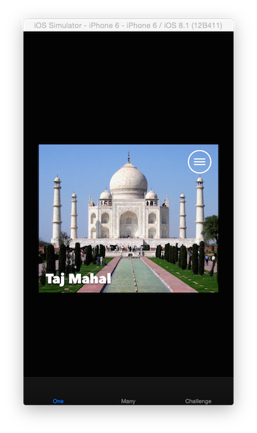
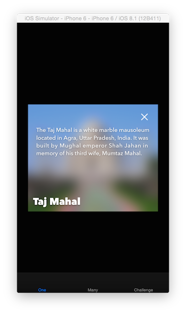

At this point, you have a view controller sizing and displaying a card asynchronously.
However, there are two major features the demo app still needs to spice things up:
ASCollectionView to place a set of card nodes onto the screen. 
You’ll start by setting up the show more button, description text, and blurred image nodes. Open CardNode.swift
Inside init!(card: Card) in the Set Up Nodes section set up the more button and description text nodes:
moreButtonNode.image = moreImage
descriptionTextNode.attributedString = NSAttributedString.attributedStringForDescriptionText(card.description)
descriptionTextNode.alpha = 0.0
Notice that the more button node is actually an image node. More about this further down.
Still in the Set Up Nodes section, set up the blurred image node:
blurredImageNode.image = card.image
blurredImageNode.imageModificationBlock = blurredImageNode.blurClosure
blurredImageNode.alpha = 0.0
The imageModificationBlock property is a block/closure that gives you the opportunity to modify the decoded image before AsyncDisplayKit sets the contents of the node’s corresponding layer. In this case, the property is set to a closure that’s returned by a helper calculated property in an extension on ASImageNode. The returned closure applies a blur using the accelerate framework. The blur is an expensive operation that can take a long time to complete especially on older hardware (e.g. iPhone 4S / 3rd generation iPad).
Wire the More button in the Wire Target Action Pairs section:
moreButtonNode.addTarget(self, action: "handleMoreButtonTap", forControlEvents: ASControlNodeEvent.TouchUpInside)
Because ASImageNode is a subclass of ASControlNode, image nodes can handle touch UIControlEvents out of the box. Super convenient! Notice AsyncDisplayKit has its own control event enumeration type, ASControlNodeEvent. The enumeration is a mirror of all the touch specific cases in UIControlEvents.
Remember that each node can be backed by either a UIView or a CALayer. Also recall that UIView implements touch handling and CALayer does not. CALayer only concerns itself with display. This means UIView backed nodes can handle touch events and CALayer backed nodes cannot. Even though ASImageNode subclasses ASControlNode, a layer backed image node won’t receive touch events. Best practice is to use view backed nodes for interactive elements and to use layer backed nodes for visual elements.
In the Build Hierarchy section, after addSubnode(imageNode) and before addSubnode(titleTextNode), add the blurred image node:
addSubnode(blurredImageNode)
Also in the Build Hierarchy section, add the More button and description text nodes to the node hierarchy:
addSubnode(moreButtonNode)
addSubnode(descriptionTextNode)
Inside calculateSizeThatFits(constrainedSize: CGSize) measure the nodes:
moreButtonNode.measure(cardSize)
descriptionTextNode.measure(cardSize.sizeByInsetting(width: 40.0, height: 40.0))
Inside layout() frame the nodes:
moreButtonNode.frame = frames.moreButtonFrame
blurredImageNode.frame = frames.imageFrame
descriptionTextNode.frame = frames.descriptionFrame
Implement the showDescription() and hideDescription() methods:
func showDescription() {
displayDescription = true
if let frames = frameSetOrNil {
UIView.animateWithDuration(0.5) {
self.moreButtonNode.image = self.closeImage
self.blurredImageNode.alpha = 1.0
self.descriptionTextNode.alpha = 1.0
}
}
}
and
func hideDescription() {
displayDescription = false
UIView.animateWithDuration(0.5) {
self.moreButtonNode.image = self.moreImage
self.blurredImageNode.alpha = 0.0
self.descriptionTextNode.alpha = 0.0
}
}
Build and run
If you’re running on an older device, you will notice the blur doesn’t fade in right away. That’s because the node is busy performing the image blur. Instead of letting the user tap on the more button while the blur is drawing, the card node should hide the more button until the blur is ready for display. On top of that, the title and image nodes should also display together. They should all fade in nicely.
In the Set Up Nodes section, set the more button node’s alpha to 0 to hide it:
moreButtonNode.alpha = 0.0
Implement subnodeDisplayWillStart(subnode: ASDisplayNode!):
override func subnodeDisplayWillStart(subnode: ASDisplayNode!) {
super.subnodeDisplayWillStart(subnode)
if subnode == blurredImageNode {
moreButtonNode.alpha = 0.0
descriptionTextNode.alpha = 0.0
blurredImageNode.alpha = 0.0
} else if subnode == imageNode {
imageNode.alpha = 0.0
titleTextNode.alpha = 0.0
}
}
This method gets called whenever a subnode is about to start its display. This is useful because the node can hide the more button whenever the blur node is about to draw. It’s also useful to hide the title text and image nodes while the main image draws.
Implement subnodeDisplayDidFinish(subnode: ASDisplayNode!):
override func subnodeDisplayDidFinish(subnode: ASDisplayNode!) {
super.subnodeDisplayDidFinish(subnode)
if subnode == blurredImageNode {
if displayDescription {
showDescription()
}
UIView.animateWithDuration(0.5) {
self.moreButtonNode.alpha = 1.0
}
} else if subnode == imageNode {
UIView.animateWithDuration(0.3) {
self.imageNode.alpha = 1.0
self.titleTextNode.alpha = 1.0
}
}
}
Whenever a subnode completes display, this method is called on the super node. This is useful for presenting the more button once the UI is ready to display responsively. It’s also important to display the description text if the user already tapped the more button (as you will see later in the collection view). That’s why showDescription() is called when displayDescription is true.
Build and run. Notice how this time the blur shows up immediately!
Open LabViewController.swift
Add an ASCollectionView constant stored property named collectionView. Give it a new async collection view with flow layout as a default value :
let collectionView = ASCollectionView(frame: CGRectZero, collectionViewLayout: UICollectionViewFlowLayout())
ASCollectionView has it’s own version of UICollectionViewDataSource and UICollectionViewDelegate protocols. The next step is to add methods so that this view controller can conform to ASCollectionView’s equivalent protocols ASCollectionViewDataSource and ASCollectionViewDelegate.
Implement collectionView(collectionView: UICollectionView, numberOfItemsInSection section: Int) by returning the count of cards:
func collectionView(collectionView: UICollectionView, numberOfItemsInSection section: Int) -> Int {
let count = cards.count
return count
}
Implement collectionView(collectionView: ASCollectionView!, nodeForItemAtIndexPath indexPath: NSIndexPath!) -> ASCellNode!:
func collectionView(collectionView: ASCollectionView!, nodeForItemAtIndexPath indexPath: NSIndexPath!) -> ASCellNode! {
let card = cards[indexPath.item]
let node = CardNode(card: card)
return node
}
Notice that nothing is getting dequeued in this method. Unlike UICollectionView, ASCollectionView asks for all of it’s contents/nodes up front. It does that so it can size every single node beforehand. This provides for an extremely snappy layoutAttributesForElementsInRect which is key for achieving 60 frames per second while scrolling.
Now that the view controller implements all the required methods in ASCollectionViewDataSource (ASCollectionViewDelegate has none), annotate the view controller as conforming to both protocols:
class LabViewController: UIViewController, ASCollectionViewDataSource, ASCollectionViewDelegate
In viewDidLoad() set the collection view’s asyncDataSource and asyncDelegate properties to the view controller:
collectionView.asyncDataSource = self
collectionView.asyncDelegate = self
Still in viewDidLoad(), set the range tuning parameters to half screenfull’s leading and trailing:
collectionView.rangeTuningParameters = ASRangeTuningParameters(leadingBufferScreenfuls: 0.5, trailingBufferScreenfuls: 0.5)
ASCollectionView uses ASRangeController under the hood in order to draw nodes further ahead in the collection view so that by the time the user scrolls to those nodes, they are ready for display. It’s one of the major reasons to use ASCollectionView. For this lab, the range has to be tuned to smaller values otherwise the collection view would trigger too many blur operations all at once and the app would run out of memory fairly quickly.
Still in viewDidLoad(), add the collection view to the view controller’s root view:
view.addSubview(collectionView)
In viewWillLayoutSubviews(), set the collection view’s content inset so that the last cell is entirely visible over the tab bar:
collectionView.contentInset = UIEdgeInsets(top: 0, left: 0, bottom:bottomLayoutGuide.length, right:0)
Last step is to frame the collection view. The collection view should fill the view controller’s root view. Continuing in viewWillLayoutSubviews() frame the collection view:
collectionView.frame = view.bounds
Voila! Build and run. Yes, it’s that easy to take an ASDisplayNode subclass and make a collection view. Note that the CardNode we built during the demo was already subclassed as ASCellNode so that we could just pop it into an ASCollectionView.
Congratulations, you’re users are ready to explore our world’s wonders, responsively! You’re ready to continue on to the challenge, where you’ll take the existing CardNode and implement a new layout. In the new layout, the height of the cards should be calculated based on the amount of space the description text fills.